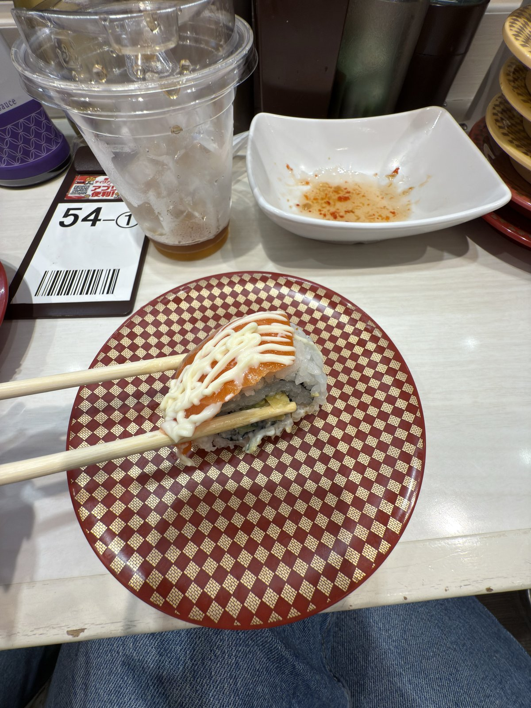
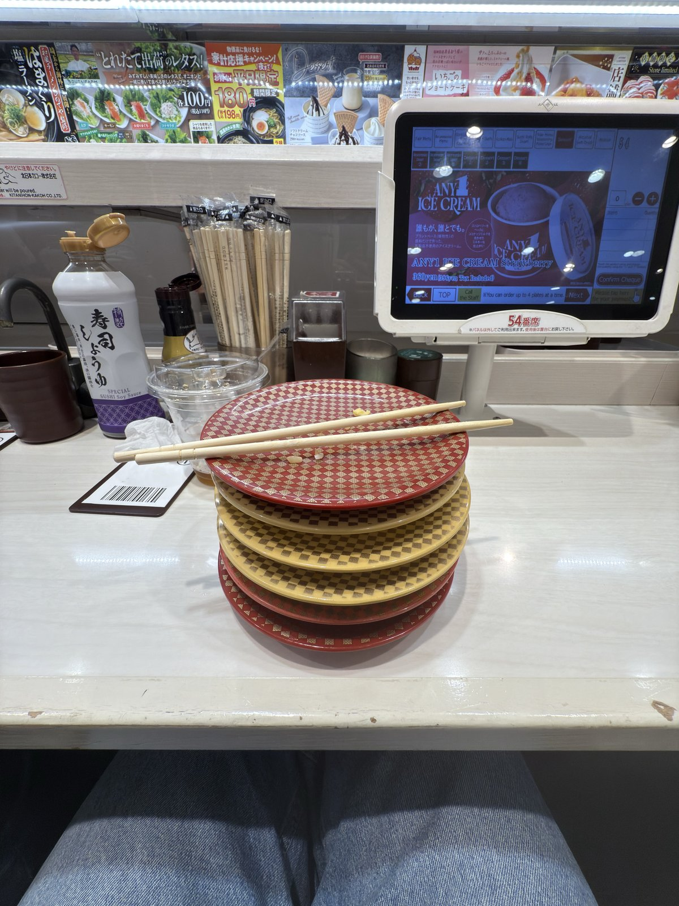

Shibuya
Uobei Shibuya Dogenzaka ★
Our favorite meal of the trip, full stop. Conveyor-belt sushi ordered from a touchscreen, delivered on a little track to your seat — fast, genuinely delicious, and so affordable we went back three times. If you eat one thing on this list, make it this.